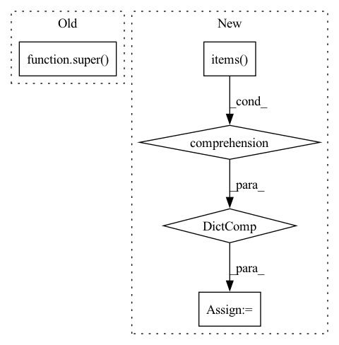

Pattern ID :4028

Before Change
Args:
**kwargs: keyword arguments forwarded to super.
super(FeverConfig, self).__init__(**kwargs)
class Fever(datasets.GeneratorBasedBuilder):
After Change
self.homepage = homepage
self.citation = citation
self.base_url = base_url
self.urls = {key: f"{base_url}/{url}" for key, url in urls.items()}
class Fever(datasets.GeneratorBasedBuilder):
Fact Extraction and VERification Dataset.
In pattern: SUPERPATTERN
Frequency: 3
Non-data size: 5
Instances
Fragment ID: 15017629
Project Name: huggingface/datasets
Commit Name: d262b95bd17972fba4b46eecd12d5809aff0aa2d
Time: 2022-07-06
Author: 8515462+albertvillanova@users.noreply.github.com
File Name: datasets/fever/fever.py
M Class Name: FeverConfig
N Class Name: FeverConfig
M Method Name: __init__(5)
N Method Name: __init__(1)
M Parent Class: datasets.BuilderConfig
N Parent Class: datasets.BuilderConfig
M File Name: datasets/fever/fever.py
N File Name: datasets/fever/fever.py
M Start Line: 46
M End Line: 52
N Start Line: 29
N End Line: 43
'>
Before Change
def training_step(self, batch, batch_idx):
// TODO
return super().training_step(batch, batch_idx)
def validation_step(self, batch, batch_idx):
// TODO
After Change
evaluated_metrics = self.evaluate_metrics(
y_pred, y_true, step_type="train"
)
tensorboard_logs = {k: {"train": v} for k, v in evaluated_metrics.items()}
// use log_dict instead of log
self.log_dict(
evaluated_metrics, on_step=True, on_epoch=False, prog_bar=True, logger=False
)
'>
Fragment ID: 15017628
Project Name: dsgoficial/pytorch_segmentation_models_trainer
Commit Name: 21db7d98379ddf1334921d1ea545657757ba8375
Time: 2021-05-14
Author: philipeborba@gmail.com
File Name: pytorch_segmentation_models_trainer/model_loader/frame_field_model.py
M Class Name: FrameFieldSegmentationPLModel
N Class Name: FrameFieldSegmentationPLModel
M Method Name: training_step(3)
N Method Name: training_step(3)
M Parent Class: Model
N Parent Class: Model
M File Name: pytorch_segmentation_models_trainer/model_loader/frame_field_model.py
N File Name: pytorch_segmentation_models_trainer/model_loader/frame_field_model.py
M Start Line: 197
M End Line: 197
N Start Line: 196
N End Line: 208
'>
Before Change
def validation_step(self, batch, batch_idx):
// TODO
return super().validation_step(batch, batch_idx)
After Change
evaluated_metrics = self.evaluate_metrics(
y_pred, y_true, step_type="train"
)
tensorboard_logs = {k: {"val": v} for k, v in evaluated_metrics.items()}
// use log_dict instead of log
self.log_dict(
evaluated_metrics, on_step=True, on_epoch=True, prog_bar=True, sync_dist=True, logger=False
)
'>
Fragment ID: 15017627
Project Name: dsgoficial/pytorch_segmentation_models_trainer
Commit Name: 21db7d98379ddf1334921d1ea545657757ba8375
Time: 2021-05-14
Author: philipeborba@gmail.com
File Name: pytorch_segmentation_models_trainer/model_loader/frame_field_model.py
M Class Name: FrameFieldSegmentationPLModel
N Class Name: FrameFieldSegmentationPLModel
M Method Name: validation_step(3)
N Method Name: validation_step(3)
M Parent Class: Model
N Parent Class: Model
M File Name: pytorch_segmentation_models_trainer/model_loader/frame_field_model.py
N File Name: pytorch_segmentation_models_trainer/model_loader/frame_field_model.py
M Start Line: 201
M End Line: 201
N Start Line: 211
N End Line: 224